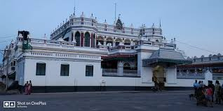

Explore Karaikudi

PALACES

In Tamil Nadu, Chettinad houses are found in many places such as Karaikkudi, Pallatthur, Attangudi and Kothamangalam. These houses are like palaces having ornamental works throughout the building and wood works carried out from the wood which was imported, many of them from East Asian countries and Europe. Valuable teak wood, marbles and granite pillars are found. It has a vast porch.Many architects researched about the architectural pattern of this palace. At the entrance beautiful facade is found. On either side of the entrance vast pial, known as 'thinnai'. Beautiful pillars are also found there. The doors and the windows which are constructed with the teak wood imported from Burma showcases the beauty of the bungalow.Generally the main doors and entrances of the houses resemble the gateways of the Hindu temples. They are majestic and intricately carved. Potholes are covered with a wire mesh in the streets of Kanadukathan, for rainwater harvesting.